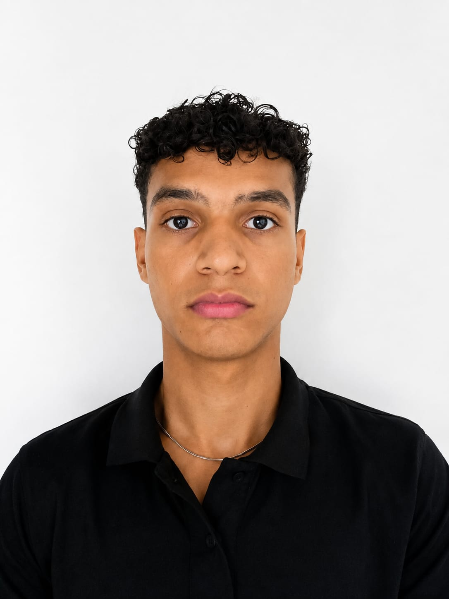

Misión
Fomentar la conciencia ambiental y la práctica del reciclaje, vinculando a las personas con puntos de recolección, contenido educativo y herramientas que impulsen la participación comunitaria.
GreenUp nace en Valledupar para reducir la distancia entre querer reciclar y saber cómo hacerlo. La plataforma reúne puntos de recolección, educación ambiental, registros y estadísticas en una experiencia accesible para la comunidad.
Una plataforma, tres participantes
En Valledupar muchas personas quieren manejar mejor sus residuos, pero no siempre conocen los puntos de entrega, sus horarios, los materiales aceptados o la forma correcta de separarlos. Esa falta de información dificulta convertir la conciencia ambiental en una práctica constante.
GreenUp responde a ese reto conectando educación, geolocalización y seguimiento para que cada usuario pueda aprender, actuar y observar su progreso desde un mismo lugar.
La pregunta que nos guía
¿Cómo puede la tecnología facilitar el reciclaje, fortalecer la conciencia ambiental y conectar a la comunidad con los puntos de recolección?
Fomentar la conciencia ambiental y la práctica del reciclaje, vinculando a las personas con puntos de recolección, contenido educativo y herramientas que impulsen la participación comunitaria.
Consolidar una herramienta tecnológica adaptable que apoye la cultura ambiental, la economía circular y la colaboración entre ciudadanía y actores del reciclaje en Valledupar y otras comunidades.
Las funciones se apoyan en módulos que ya forman parte de la plataforma y de su backend.
Consultar ubicaciones de reciclaje y los materiales recibidos en cada punto.
Guardar el material, la cantidad, la fecha y el lugar asociado a cada entrega.
Acceder a contenidos sobre clasificación de residuos, reciclaje y sostenibilidad.
Observar cantidades registradas, evolución del reciclaje y actividad por material.
Informar problemas como puntos saturados, inactivos o con datos incorrectos.
Ofrecer accesos diferenciados para ciudadanía, recicladoras y administración.
Estos son los efectos que el proyecto busca promover; no son cifras o resultados inventados.
Impulsar participación y conciencia ambiental en la comunidad.
Apoyar la economía circular y el valor de los materiales recuperables.
Favorecer la separación y reducir residuos sólidos mal gestionados.
Integrar mapas, datos y educación en una herramienta adaptable.
GreenUp es un proyecto académico desarrollado colaborativamente por tres aprendices. El análisis, el diseño y la construcción de la plataforma son resultado del trabajo conjunto.
Aprendiz SENA de Análisis y Desarrollo de Software, enfocada en el análisis, diseño y creación de soluciones digitales funcionales, atractivas y de calidad. En GreenUp fortalece el diseño de interfaces y la integración de funcionalidades.
@anyelimarianchico-dev
Aprendiz SENA de Análisis y Desarrollo de Software, interesado en la tecnología y el desarrollo de soluciones digitales. En GreenUp participa principalmente en la construcción de interfaces y la implementación visual de la plataforma.
@OresteSuarezAprendiz SENA de Análisis y Desarrollo de Software, con formación previa en Ingeniería de Sistemas. Participa en requerimientos, diseño, codificación, pruebas y documentación, con énfasis en backend, datos e integración técnica.
@ruth-abello-yepesLa propuesta nació como una aplicación móvil educativa. Actualmente se implementa como una plataforma web responsive con frontend en HTML, CSS, JavaScript y Bootstrap, una API en Flask y almacenamiento en PostgreSQL/Supabase.